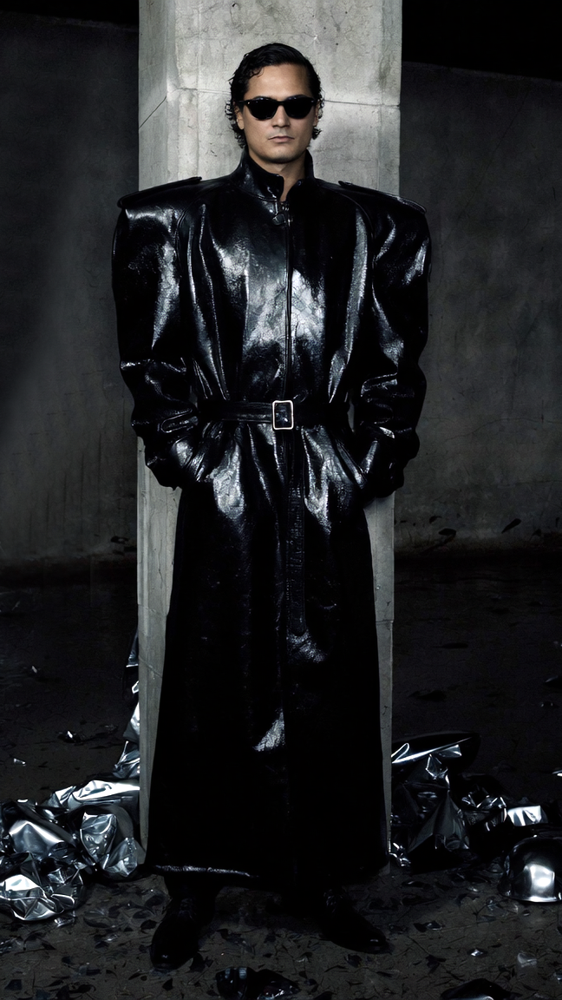

Fashion After Fabric / Parallel Vision
Alejandro
Molinari
02 / Inhabitant Study
Lotus 2063
The body becomes an archive of presence. Black volume, reflective pressure and controlled silhouette turn the figure into a signal inside Berlin 2063.
A system of presence.
Look 02 / Lotus 2063
A full-body study of Lotus 2063 as a controlled silhouette: dark surface, expanded volume and reflective pressure moving between club architecture, transit memory and future ceremonial wear.

Lotus 2063 / Surface System
Surface System
The material study focuses on contrast rather than decoration: matte shadow, liquid reflection, hard silhouette and the distance between body and environment.
Archive Note
A body inside the system.
Inside Berlin 2063, the body is not separate from the architecture of Parallel Vision. Sound, garment and environment occupy the same frame: a figure moving through projected futures.